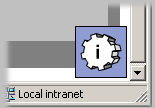

Please select one of the following Tapestry applications from the tutorial:
| Hello World | A very basic "Hello World" application. |
|---|---|
| Simple | Shows simple dynamic behaviors, on a single page. |
| Adder | A very simple adding machine; shows off simple form input and validation, an the use of a Foreach to iterate over a result set. |
| Hangman | Basic implementation of the game of Hangman. Guess letters one at a time until you run out of guesses, or determine the secret word. More advanced use of forms, as well as a Direct inside a Foreach. |
| Border | An example of a useful, reusable component, a common navigation border for a set of pages.
In addition, the tapestry Inspector makes its first appearance. Click the animated icon in the lower left corner of the page to launch a mini-application that allows you to view how a running application is constructed. Check it out --- the Inspector the most impressive demo here. |
| Survey | More advanced form handling demonstration, in a simulated database-driven application. |
| Locale | A demonstration of how Tapestry automatically handles localization/internationalization. |
| Valid | A demonstration (well, more of a testing ground) of the validating text fields, including the new (as of release 1.0.1) NumericField. Also shows off the new Palette component. |
| Portal | An example of how Tapestry can be used to build data-driven Portals. |